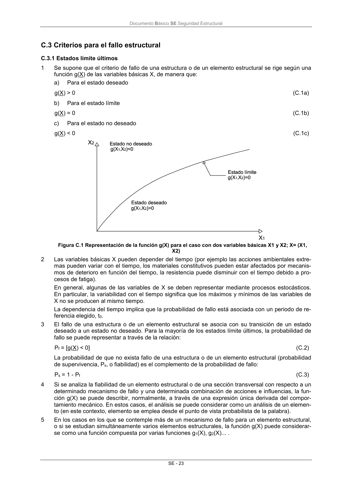

DB-SE Seguridad estructural · edición 2019-12-20 · capa oficial
Documento DB-SE-oficial · SHA-256 del PDF ec1fbfc51b28c4d62667aec480585b76fe31727ccf1615015a5d2d2677763f8f
Copia fiel del PDF fuente · Fuente oficial
Ficha de la disposición en la fuente oficial
Formatos: JSON del segmento · Markdown
C.2 Incertidumbres asociadas con las variables básicas C.2.1 Fuentes de incertidumbres 1 Se pueden distinguir tres tipos de incertidumbres asociadas con las variables básicas: a) la variabilidad aleatoria inherente al modelo; b) las incertidumbres debidas a la falta de conocimientos; c) las incertidumbres estadísticas. A su vez, cada uno de estos tipos de incertidumbres se puede subdividir. 2 La variabilidad aleatoria inherente se puede dividir en incertidumbres de dos categorías, según es- tén o no afectadas por actividades humanas. Muchos parámetros relativos a las acciones pertenecen a la segunda categoría, por ejemplo la ve- locidad del viento o la carga de nieve sobre el terreno. También existen parámetros de resistencia correspondientes a esta segunda categoría, por ejemplo los parámetros de resistencia de un te- rreno. Ejemplos correspondientes al primer tipo de incertidumbres son la resistencia de los materiales constructivos (por ejemplo hormigón o acero) o las dimensiones de elementos estructurales. Estas incertidumbres se pueden reducir mediante métodos de fabricación o de producción más avanza- dos, o a través de métodos de control adecuados. 3 Las incertidumbres debidas a la falta de conocimientos se pueden subdividir en dos categorías, las relativas a las incertidumbres de los modelos, y las que dependen de la evolución futura de ciertos parámetros. Las incertidumbres de los modelos, que se pueden referir tanto a los modelos de las acciones y de sus efectos como a los modelos de resistencia, se pueden reducir a través de la mejora de los co- nocimientos mediante ensayos o investigaciones teóricas. A la segunda categoría pertenecen, por ejemplo, las incertidumbres sobre la evolución futura de las sobrecargas. Las posibilidades de reducción de estas incertidumbres son más reducidas. Documento Básico SE Seguridad Estructural SE - 22 4 Las incertidumbres estadísticas están asociadas con la evaluación estadística de los resultados de ensayos, mediciones u otras observaciones, y pueden ser debidas a: a) la falta de identificación y de distinción entre diferentes poblaciones estadísticas; b) un número limitado de resultados que conduce a incertidumbres en la obtención de los pará- metros estadísticos (por ejemplo del valor medio o de la desviación típica); c) la no consideración de las variaciones sistemáticas de las variables analizadas (por ejemplo de parámetros climáticos); d) una extrapolación excesiva de la información estadística; e) la no consideración de posibles correlaciones; f) el empleo de distribuciones estadísticas para la descripción de incertidumbres cuyo origen sólo en parte es estadístico. Normalmente, las incertidumbres estadísticas se pueden reducir a través de un mayor número de ensayos u observaciones. C.2.2 Obtención de datos básicos 1 Los valores numéricos de los parámetros que caractericen un modelo y sus incertidumbres se pue- den obtener por las siguientes vías: a) mediciones u observaciones; b) análisis; c) adopción de decisiones. Con frecuencia, los valores numéricos de los parámetros se obtienen combinando datos obtenidos por diferentes vías. La resistencia a tracción del hormigón se puede determinar a partir de la medi- ción de su resistencia a compresión y un análisis mediante una función de conversión; la sobrecar- ga de un puente grúa se establece mediante decisión y las fuerzas dinámicas adicionales se pue- den determinar mediante análisis; las sobrecargas en edificios se pueden determinar mediante ob- servación en combinación con una hipótesis sobre la evolución futura. 2 Las variables básicas que tengan en cuenta las incertidumbres se caracterizarán mediante paráme- tros tales como el valor medio, la desviación típica, las correlaciones con otras variables y el tipo de distribución estadística. En los casos en los que los valores numéricos de estos parámetros se de- terminen de acuerdo con C.2.2(1a) o C.2.2(1b), el procedimiento incluirá un análisis estadístico de los datos y los resultados se representarán en términos estadísticos. Si por el contrario los valores numéricos de los parámetros de las variables básicas se determinan de acuerdo con C.2.2(1c) no es posible, normalmente, una representación directa en términos esta- dísticos. No obstante, a efectos de la aplicación de los métodos probabilistas, también a estas va- riables se les deben asignar parámetros estadísticos. 3 Las incertidumbres debidas a errores tales como los errores de medición o los efectos de escala, se evitarán mediante la adopción de medidas adecuadas como por ejemplo una gestión eficaz de la calidad del proceso de obtención de los datos básicos. C.2.3 Selección de distribuciones estadísticas 1 En muchos casos, el número reducido de datos disponibles no permite determinar de manera inequívoca una función de distribución estadística. Por este motivo, se seleccionará una distribución que tenga unas características apropiadas en relación con la variable básica considerada, teniendo en cuenta el posible sesgo. 2 Para las acciones permanentes se puede adoptar una distribución normal, siempre y cuando la posibilidad de que se produzcan valores negativos no resulte contradictoria con otras hipótesis y no pueda ser la causa de resultados erróneos. En caso contrario, resultará más conveniente adoptar una distribución del tipo logarítmica normal, Weibull, Gamma, o de valores extremos. Para las acciones variables, resulta más conveniente adoptar una distribución del tipo logarítmica normal, Weibull, Gamma, o de valores extremos, particularmente si la distribución debe representar un valor máximo en un determinado periodo de tiempo. 3 Para las propiedades de los materiales y para las dimensiones, suele ser adecuada una distribución del tipo normal o logarítmica normal. Si, debido a motivos físicos u otras circunstancias, no se pue- den producir valores negativos, resulta preferible una distribución logarítmica normal. Documento Básico SE Seguridad Estructural SE - 23
